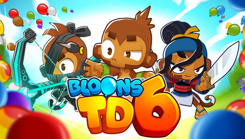

Bloons Tower Defense 6 is a strategy-oriented tower defense game in which you must make use of the 25 Monkey towers to pop waves of Bloons that will follow a set path along a track on screen. Bloons come in various "flavors" that will make them immune to the attacks of some towers but vulnerable to others. In addition, each of your towers will have 15 unique upgrades to select from to improve your chances of winning. This interactable cheat sheet will help you learn the more detailed stats of each tower and their upgrades, particularly the ones the game hides from you. Good luck!
"Words are cheap. Show me the code." - Linus Torvalds